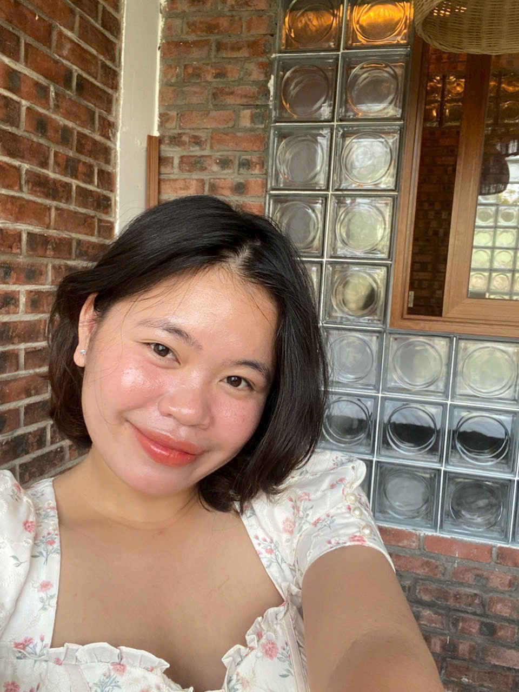

01 / LANGUAGE
Đào tạo tiếng Đức online
Học tiếng Đức bài bản từ nền tảng, hiểu bản chất ngữ pháp, phát triển khả năng sử dụng ngôn ngữ và chuẩn bị cho các kỳ thi chứng chỉ.
Xem chương trình & học phíTừ những bài học tiếng Đức đầu tiên đến lựa chọn con đường học tập và nghề nghiệp tại Đức — DHK đồng hành bằng chuyên môn, sự tận tâm và lộ trình rõ ràng.

Mỗi học viên có mục tiêu riêng. DHK xây dựng các hình thức hỗ trợ phù hợp với từng giai đoạn, từ học ngôn ngữ đến chuẩn bị học tập và làm việc tại Đức.
Học tiếng Đức bài bản từ nền tảng, hiểu bản chất ngữ pháp, phát triển khả năng sử dụng ngôn ngữ và chuẩn bị cho các kỳ thi chứng chỉ.
Xem chương trình & học phíĐồng hành từ chọn trường, chuẩn bị hồ sơ, visa đến những ngày đầu tại Đức; tiếp tục hỗ trợ cho đến khi bạn thực sự ổn định.
Tìm hiểu gói mentorTừ định hướng ngành nghề, học tiếng, ứng tuyển và phỏng vấn đến chuẩn bị visa và hỗ trợ thích nghi sau khi đến Đức.
Xem chương trình 105 triệu
Nhà sáng lập Tiếng Đức DHK · Giáo viên tiếng Đức nhiều năm kinh nghiệm · Mentor du học Đức
Tôi tốt nghiệp Cử nhân Ngôn ngữ Đức tại Trường Đại học Ngoại ngữ – Đại học Quốc gia Hà Nội. Hiện là sinh viên song ngành Triết học và Ai Cập học tại Johannes Gutenberg-Universität Mainz, Đức.
Với nhiều năm kinh nghiệm giảng dạy tiếng Đức, tôi đã đồng hành cùng khoảng 500 học viên, trong đó có hơn 300 học viên online và hơn 200 học viên trực tiếp.
Trong giảng dạy, tôi luôn mong muốn học viên hiểu vì sao mình phải học một kiến thức, kiến thức ấy liên quan đến những phần nào và có thể vận dụng ra sao trong thực tế.
Hơn thế nữa, tôi muốn giúp các bạn có một góc nhìn khác về tiếng Đức: đây là một ngôn ngữ có tính logic và hệ thống rõ ràng, không hề khó hiểu hay hóc búa như nhiều người vẫn nghĩ. Khi được tiếp cận đúng cách, những quy tắc tưởng chừng phức tạp cũng có thể trở nên đơn giản và dễ nắm bắt hơn.
Tôi hy vọng rằng, thay vì học tiếng Đức với tâm lý e ngại, các bạn sẽ dần tìm thấy sự hứng thú, tự tin và niềm vui trong quá trình chinh phục ngôn ngữ này.
Học phí được công khai theo từng cấp độ để học viên chủ động lựa chọn lộ trình phù hợp.
Liên hệ tư vấn để được hỗ trợ lựa chọn trình độ và lịch học phù hợp.
Hỗ trợ cá nhân hóa dành cho những bạn muốn xây dựng lộ trình du học đại học Đức một cách rõ ràng và thực tế.
Đồng hành từ A đến Z: xây dựng lộ trình cá nhân hóa, lựa chọn trường và ngành học; hướng dẫn APS, hồ sơ ứng tuyển, thủ tục visa, tìm hiểu chỗ ở và chuẩn bị trước chuyến bay. Sau khi bạn đến Đức, DHK tiếp tục giải đáp thắc mắc, chia sẻ kinh nghiệm và hỗ trợ những bước đầu trong học tập, sinh hoạt và thủ tục cần thiết, cho đến khi bạn thực sự ổn định và không còn cần đến sự hỗ trợ của DHK nữa.
Trao đổi trực tiếp với Frau Hà AnhDHK đồng hành cùng học viên trong quá trình chuẩn bị và bắt đầu hành trình học nghề tại Đức, với các hạng mục chi phí được trình bày rõ ràng.
Từ học tiếng đến chuẩn bị hồ sơ, ứng tuyển và sang Đức — một hành trình luôn có người đồng hành.
Điều kiện miễn học phí B1–B2 và các quyền lợi cụ thể được trao đổi rõ khi tư vấn chương trình.
Tại DHK, chúng tôi tin rằng hành trình đến Đức không nên chỉ là câu chuyện của những bộ hồ sơ, tấm visa hay các khoản chi phí. Chúng tôi mong muốn mang đến lộ trình rõ ràng, minh bạch về tài chính và tối ưu chi phí để giảm thiểu gánh nặng cho học viên và gia đình.
DHK luôn sẵn sàng đồng hành, lắng nghe và hỗ trợ các bạn từ những bước chuẩn bị đầu tiên tại Việt Nam cho đến khi ổn định cuộc sống tại Đức, và tiếp tục ở bên cho đến khi các bạn thực sự không còn cần đến sự hỗ trợ của chúng tôi nữa.
Điều DHK hướng đến không chỉ là giúp bạn đặt chân đến Đức, mà còn là để hành trình nơi xứ người của bạn trở nên nhẹ nhàng hơn, rõ ràng hơn và bớt cô đơn đi phần nào.
Những bài viết về học tiếng Đức, du học đại học, Ausbildung và cuộc sống tại Đức — được chia sẻ từ kinh nghiệm thực tế, với mong muốn giúp hành trình của bạn rõ ràng và bớt cô đơn hơn.
Khám phá bài viết ↗Dù bạn đang tìm khóa học tiếng Đức, cân nhắc du học đại học hay quan tâm chương trình Ausbildung, DHK luôn sẵn sàng lắng nghe và trao đổi về lộ trình phù hợp.